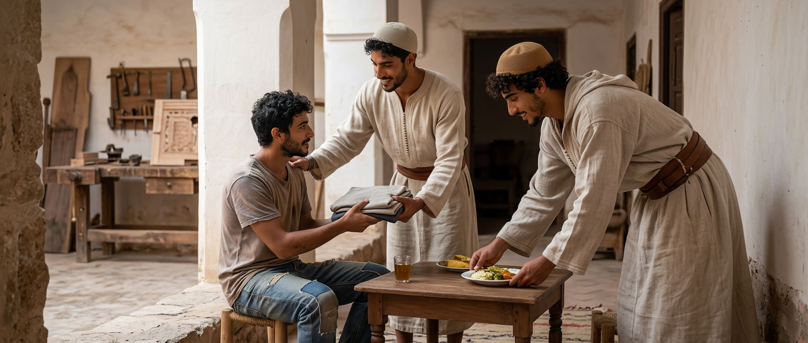
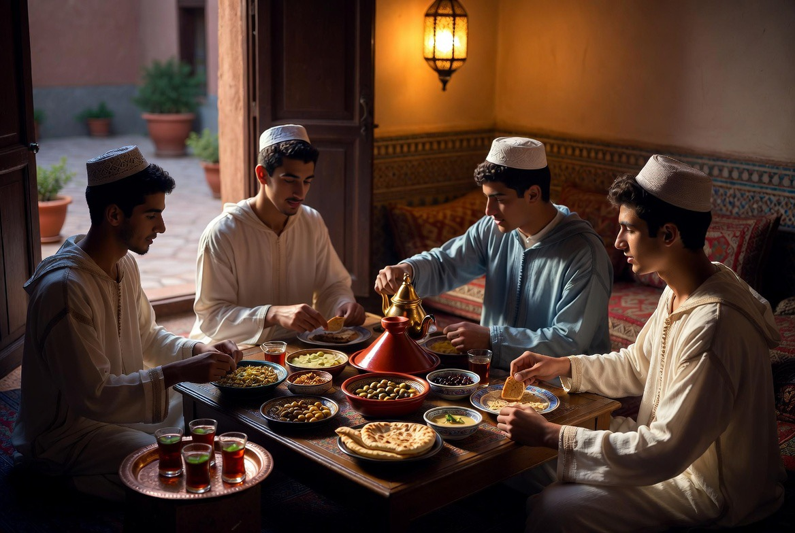
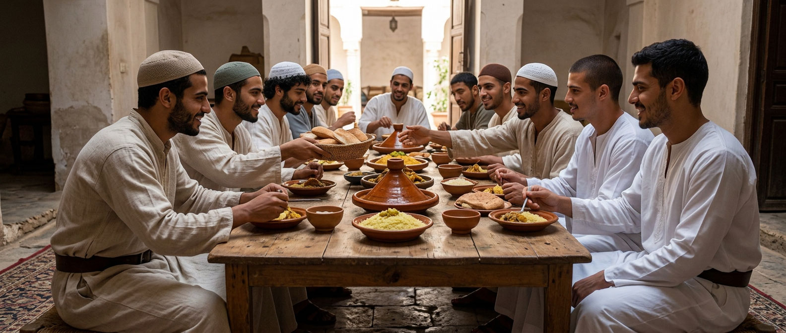
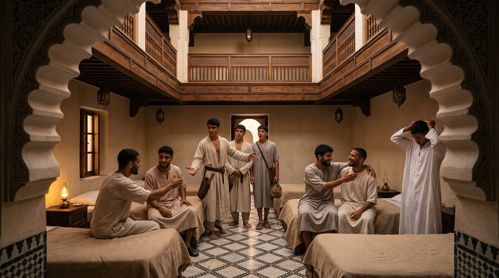

Charity & service
What the house receives, it also learns to give.

The formation received at Riad Al-Uns is not measured only by the hand that learns a craft, but by the character that is forged with it. A man capable of carving gesso or tracing a Kufic letter, but incapable of bending toward one who is hungry, has not fully understood what the house wishes to transmit to him. Service to the poor and to young people in difficulty in the city is part of the ordinary rhythm of the community — not an occasional initiative.
RHYTHM
A rhythm, not an exception
Weekly food assistance to needy families in Fès, intensified during Ramadan.
Read →CRAFT
The hand that gives
A portion of the work of Dar al-Hiraf, or of its sale, devoted to assisting the poorest.
Read →WELCOME
A door left ajar
Young people from Fès in difficulty received, for a time, into the life and work of the house.
Read →A RHYTHM, NOT AN EXCEPTION
A regular commitment

Periodically, a group of residents visits needy families in Fès to bring them food and assistance. This service follows the weekly rhythm of the house — linked in particular to the day of communal prayer — and intensifies during periods of the Islamic calendar when charity holds a central place, such as Ramadan. This is not a separate social project, but a natural extension of the daily discipline that already sets the rhythm of the riad's days.
THE CRAFT PUT TO SERVICE
The hand that works, the hand that gives

Part of the work produced at Dar al-Hiraf — a woven piece, a crafted object — is periodically given to those in need, or the proceeds of its sale are devoted to assisting the poorest. In this way, the craft does not remain a knowledge closed in on itself: it also becomes a service. One learns to work with one's hands for oneself, for the household one will one day found, and for the one who has nothing.
WELCOMING YOUNG PEOPLE FROM FÈS
A door left ajar

Beyond material assistance, the house periodically opens its doors to young people from Fès in difficulty, inviting them to share, for a day or a few days, the life and work of Dar al-Hiraf. This is not charity in the strict sense, but a gesture of transmission: offering to one who would not otherwise have access the chance to touch an ancient craft, to sit at the same table, to measure himself against the same order and the same discipline.
These young men — mostly the same age as the residents of the house — are not received as social cases, but as brothers and friends. Once past the threshold, nothing should set them apart from the others: they receive decent clothing, take their place at the communal table, sleep in the same rooms, wash at the same hammam, train in the same hall and, if they wish, take part in the same workshops as the apprentices of Dar al-Hiraf. This sharing does not erase their history; it simply spares them from carrying it alone, under the eyes of others.



Beyond the hospitality of the moment, the house seeks to open for them a path toward self-sufficiency: a craft learned, a discipline acquired, enough to stand on one's own the day of departure. Some, if they show sincere and lasting commitment, may be chosen to stay — not as dependents, but as residents in their own right, in exchange for genuine collaboration in the daily tasks of the house. Only one thing is then asked of them: to open themselves, gradually, to the spirit that dwells in Dar al-Hiraf — that benevolent spirit tradition says watches over the house of crafts — and to conform to it, as every resident does.
مَا نَقَصَتْ صَدَقَةٌ مِنْ مَالٍ
« Charity never decreases wealth. »
— Narrated by Muslim (Ṣaḥīḥ Muslim, 2588)
DISCRETION
A silent continuity
The riad does not seek recognition for these gestures. In the Islamic tradition, charity (ṣadaqa, صدقة) finds its value precisely in the discretion with which it is carried out. To support this dimension of the house's life is to support not only the transmission of a craft knowledge, but the continuity of an ethic — that of futuwwa (الفتوة) — in which a man's character is measured as much by the care given to his craft as by the care given to the one standing beside him.
THE THRESHOLD
Entering without means
Young men in precarious circumstances are received with no condition other than their compatibility with futuwwa and furūsiyya. One is not judged by what one can buy, but by what one is.
SUPPORT THIS CONTINUITY
SUPPORT THIS CONTINUITY
Write to us
Anyone wishing to join this dimension of the project — occasionally or over the long term — is invited to write to us.
Write to us →